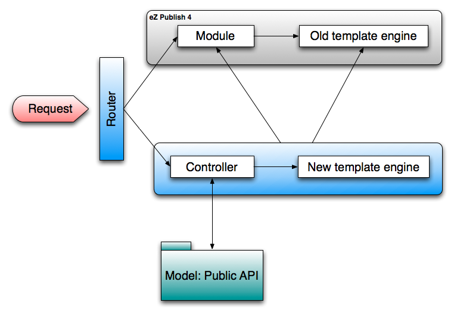

eZ Publish 5 and BC
Available online at
http://lolautruche.github.io/ez/bc
About me
- eZ & Symfony Community member since 2007
- Part of engineering team since 2011
- Lead engineer eZ Symfony
- Webmaster of http://www.metalfrance.net, powered by eZ Publish (soon to be migrated to v5)
PM Scrum story
«As an eZ Publish user, I don’t want to be
pissed off by a new #@!$% version!»
The challenges
- 100% data compatible (same database schema)
- Include legacy templates into new ones
- Routing fallback
- Load legacy content templates with old override rules
- Settings
- Access Symfony services from legacy PHP code (e.g. modules)
Challenge accepted !
Dual Core architecture

Concrete example: Using eZ Find
$searchPhrase = 'My search phrase';
$sort = array(
'score' => 'desc',
'published' => 'desc'
);
$contentTypeIdentifiers = array( 'folder', 'article' );
$mySearchResults = $this->getLegacyKernel()->runCallback(
function () use ( $searchPhrase, $sort, $contentTypeIdentifiers )
{
// eZFunctionHandler::execute is the equivalent for a legacy template fetch function
// The following is the same than fetch( 'ezfind', 'search', hash(...) )
return \eZFunctionHandler::execute(
'ezfind',
'search',
array(
'query' => $searchPhrase,
'sort_by' => $sort,
'class_id' => $contentTypeIdentifiers
)
);
},
false
);
Call Symfony services from legacy code
// From anywhere in legacy code
/** @var \Symfony\Component\DependencyInjection\ContainerInterface $serviceContainer */
$serviceContainer = ezpKernel::instance()->getServiceContainer();
$repository = $serviceContainer->get( 'ezpublish.api.repository' );
$rootLocation = $repository->getLocationService()->loadLocation( 2 );
- You can call and use every declared public service
-
As controllers can be defined as services, you can use controllers for your modules!
(particularly useful for module migration)
If I migrate to eZ 5, will my site work?
- Short answer: YES!!!
- Define new Twig templates, they will used directly
- If no Twig template yet, all your old content templates
will be taken into account as fallback - All your modules will continue to work (routing fallback)